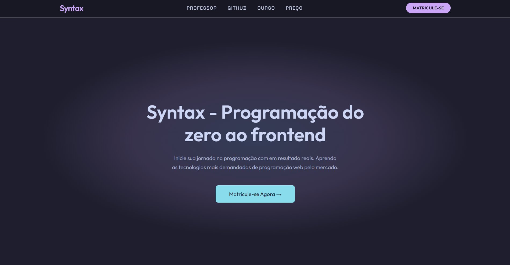
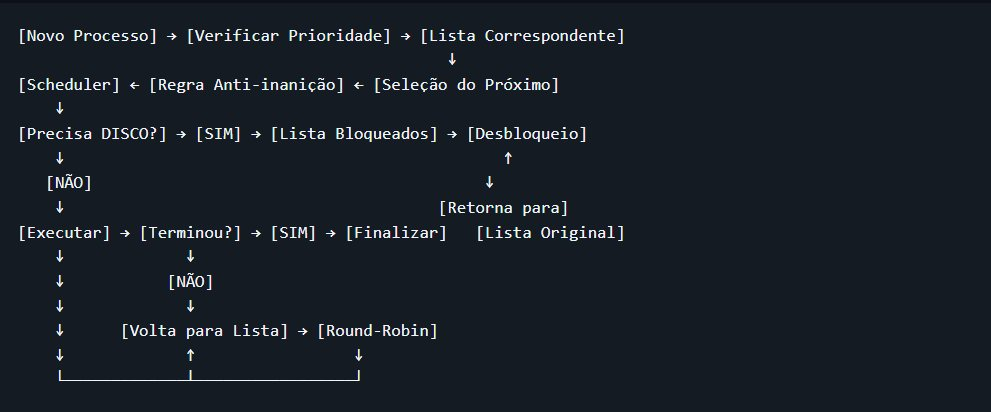
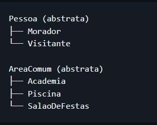

Projetos

Syntax — Curso de Programação Web
Landing page de um curso de programação web e JavaScript. Conta com integração à API do GitHub, sistema de matrículas via Mercado Pago e design responsivo com a paleta Catppuccin Mocha.
Ver no GitHub →
Escalonador de Processos — iCEVOS
Simulador de escalonamento de processos com listas de prioridade e prevenção de inanição, desenvolvido do zero em Java sem uso de bibliotecas prontas. Trabalho da disciplina de Algoritmos e Estrutura de Dados I.
Ver no GitHub →
Sistema de Administração de Condomínios — Vista Alegre
Sistema completo para gerenciamento condominial aplicando os pilares de POO. Controle automatizado de moradores, visitantes, reservas de áreas comuns com tratamento de conflitos, chamados de manutenção e balanço financeiro com persistência de dados.
Ver no GitHub →Sistema de Análise Forense Computacional
Ferramenta desenvolvida em Java para processamento e auditoria de dados estruturados. Focada na identificação de padrões, validação de integridade de arquivos e geração de relatórios para investigação forense digital de forma automatizada.
Ver no GitHub →